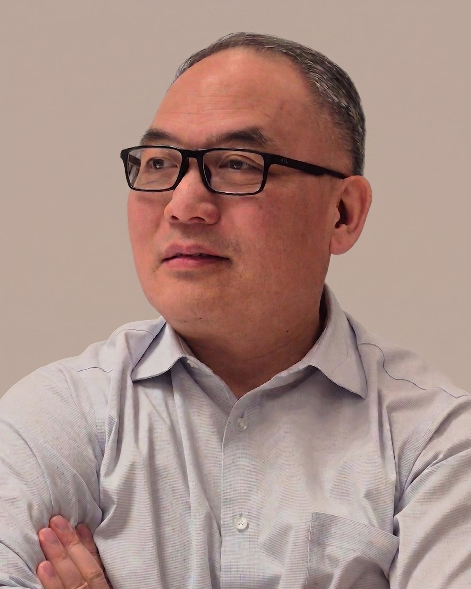

한마음침례교회ONE HEART BAPTIST CHURCH한마음침례교회ONE HEART BAPTIST CHURCH
한마음침례교회ONE HEART BAPTIST CHURCH한마음침례교회ONE HEART BAPTIST CHURCH
미국 조지아주 콜럼버스 한인교회 · Korean Baptist Church in Columbus, GA
Pastor's Greeting

Pastor's Greeting · In English
Education & Ministry
Sunday Gatherings
Visit Us
New Here?
방문을 원하시거나 궁금한 점이 있으시면 언제든지 연락 주세요. 예수님 안에서 한 가족으로 맞이하겠습니다. If you would like to visit or have any questions, please reach out anytime. We would love to welcome you as family in Christ.
문의 남기기 · Leave a Message